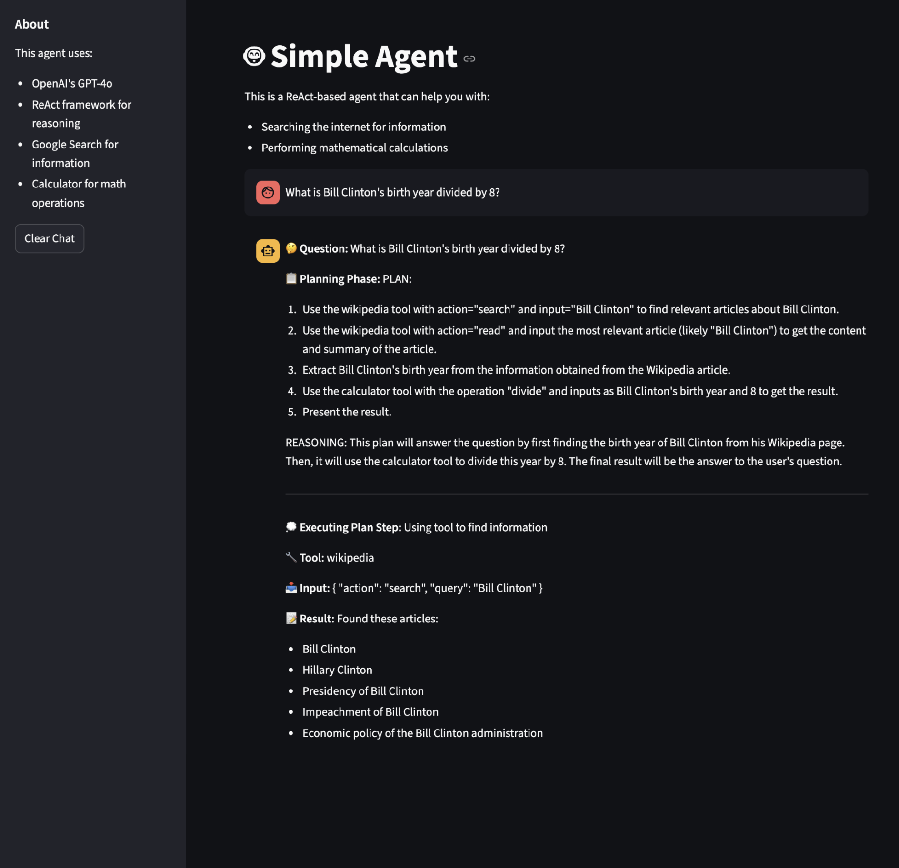
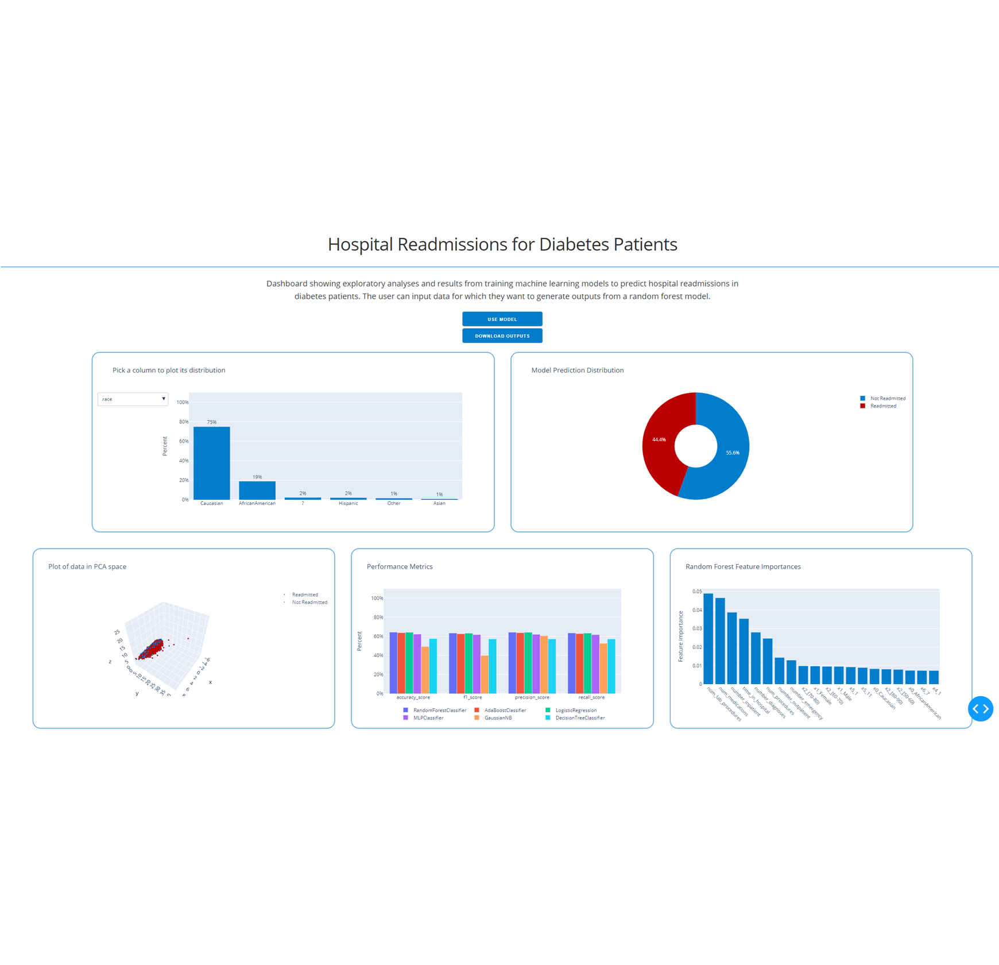
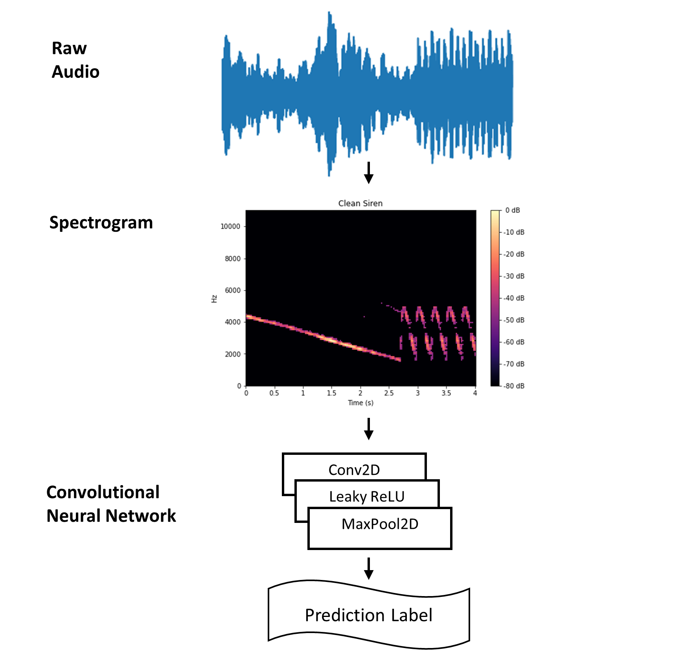
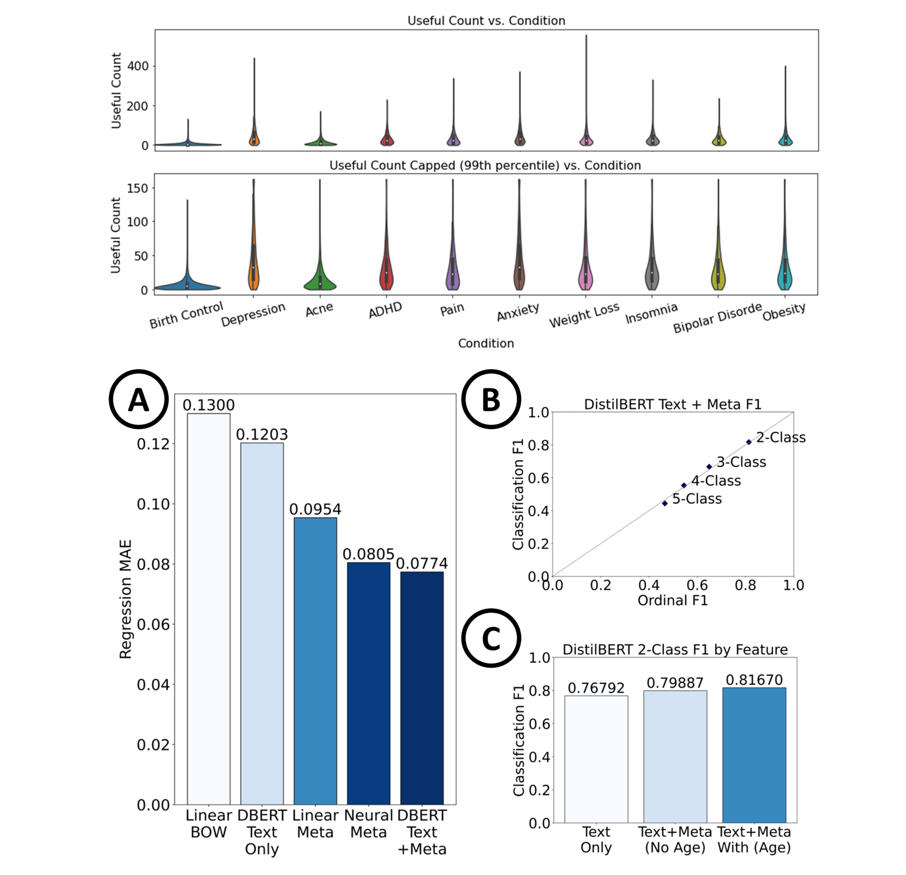
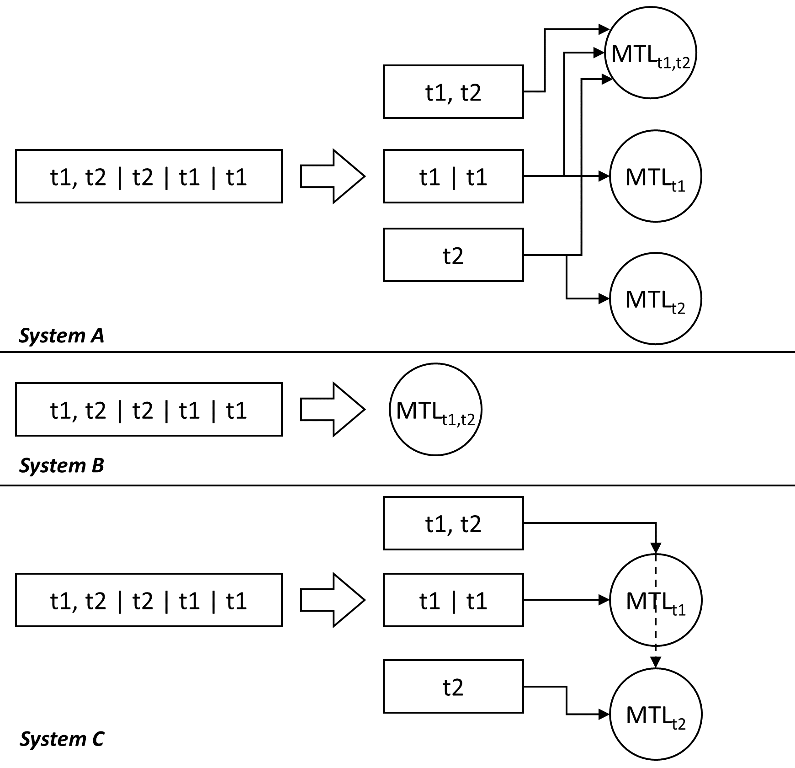
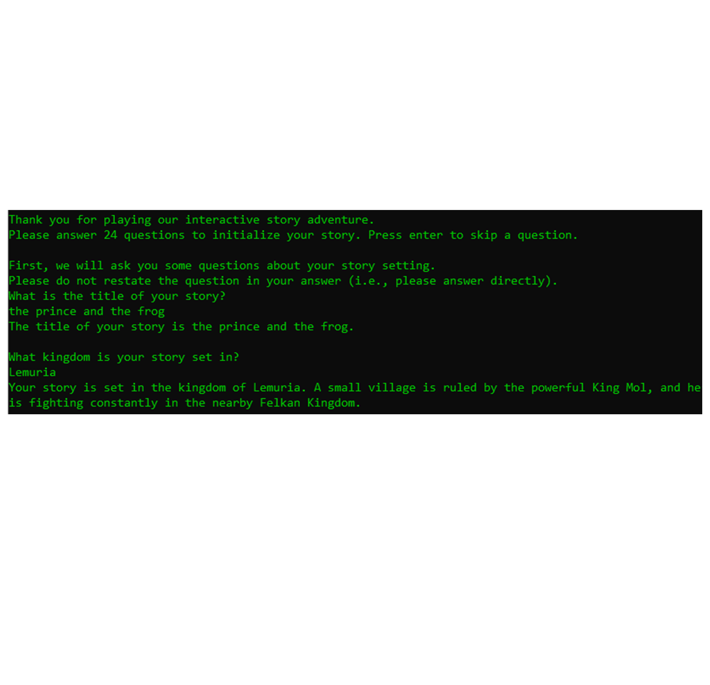

About
AI Engineer & Solution Architect
I am an AI Engineer and Solution Architect with 6+ years of experience building and deploying production AI systems across language, vision, and tabular data. My work centers on end-to-end GenAI applications: designing RAG pipelines, context engineering, tool-using agents, and fine-tuning and serving performant LLMs and VLMs, while leading engineering teams that bring these systems from prototype to production. I also bring a strong research background in deep learning, with published work in NLP and computer vision, and hands-on experience across the full ML lifecycle from feature engineering through deployment and monitoring.
Currently, I am an Applied Machine Learning Engineer at Fireworks AI.
- Focus: GenAI, LLM applications
- Universities: Georgia Tech, UMiami
- Degrees: MS, BS
- Location: San Francisco, CA
- Email: j.miano@outlook.com
- Languages: English, French, Spanish
Skills
Programming Languages
- Python
- Go
- TypeScript
- SQL
- Java
- C
AI & ML Frameworks
- PyTorch
- Hugging Face
- LlamaIndex
- LangChain
- vLLM
- Unsloth
Visualization
- Matplotlib
- Seaborn
- Plotly
- Streamlit
- Tableau
- Gradio
Techniques
- Deep Learning
- Agents
- Feature Engineering
- Ensemble Methods
- Unsupervised Learning
- Context Engineering
Data Domains
- Natural Language
- Image
- Audio & Speech
- Tabular Data
- Time Series
- Video
DevOps & Cloud
- Kubernetes
- Docker
- Git
- Azure
- GCP
- AWS
Resume
Click here to view my resume as a PDF.
Work Experience
Applied Machine Learning Engineer
Jun 2025 - Mar 2026
Fireworks AI, San Francisco, CA
- Optimized LLM/VLM workloads end-to-end, from fine-tuning and evals through serving configuration and deployment, across production RAG, agent, and multimodal use cases for 6+ enterprise customers
- Onboarded 5+ open models on Fireworks AI, including its first omni model, enabling a production multimodal deployment for a healthcare customer
- Drove adoption of Fireworks AI by creating 10+ pieces of technical content, including tutorials, demo applications, and API documentation, improving the onboarding experience for new developers
Senior Machine Learning Engineer → GenAI Lead
Mar 2023 - Apr 2025
Superlinear, Brussels, Belgium
- Led a team of 8 GenAI-focused machine learning engineers supporting a project portfolio valued at €1M+ in yearly revenue
- Coordinated the development and deployment of a pharma client's first GenAI app, unlocking €50k+ of yearly savings via automatic translation and PII detection
- Generated €250k+ revenue via technical presales, including solution architecture design, proposal crafting, and presentations to key stakeholders
Senior Data Scientist (AI & ML)
Feb 2022 - Mar 2023
JPMorgan Chase, New York, NY
- Engineered 100+ features and trained ML models to predict fraudulent customer authentication events, balancing customer service experience with fraud risk
- Coordinated the Explainable AI track for the inaugural 2022 JPMorgan Chase AI Summit, which brought together 10+ speakers and 100+ attendees
Consultant → Senior Consultant
Aug 2016 - Apr 2018
CVS Health, Woonsocket, RI
- Developed predictive models to identify patients at risk of non-adherence, enabling targeted outreach programs across 5,000+ CVS stores nationwide, improving medication adherence rates in outcomes-based contracts
- Quality-tested 50+ features for an enterprise-level predictive modeling project in collaboration with stakeholders from several departments
Education
Master of Science in Computer Science
Aug 2020 - Dec 2021
Georgia Institute of Technology, Atlanta, GA
- Machine Learning Specialization
- Graduate Research Assistant at the Georgia Tech Research Institute
- Coursework in deep learning, computer vision, natural language processing, and machine learning theory
Bachelor of Science in Computer Science
May 2018 - May 2020
Georgia Institute of Technology, Atlanta, GA
- 2nd B.S.
- Coursework in computer science and mathematics
- Specializations in theory and artificial intelligence
Bachelor of Science in Neuroscience
Aug 2012 - May 2016
University of Miami, Coral Gables, FL
- Minors in Finance and Chemistry
- Research in cellular neuroscience
- Pre-medical track with medical shadowing experience
Research & Internships
Graduate Research Assistant (AI & ML)
Sep 2020 - Dec 2021
Georgia Tech Research Institute, Atlanta, GA
- Implemented neural natural language processing models (RoBERTa) to automate COVID-19 outbreak detection using web-scraped news article contents
- Published a paper as first author in the Springer Lecture Notes in Artificial Intelligence as part of the 2021 Artificial Intelligence in Medicine Conference
Research Assistant (AI & ML)
Aug 2018 - Jul 2020
Neural Data Science Lab, Georgia Tech, Atlanta, GA
- Engineered a novel multi-task convolutional neural network architecture for joint microstructure segmentation and brain area classification of mouse brain x-ray data
- Presented a joint poster at the Allen Institute BioImage Informatics 2019 Conference (funded with PURA Travel Award)
Software Engineering Summer Intern
Jun 2019 - Aug 2019
American Express, Phoenix, AZ
- Trained natural language processing machine learning models using Python to automate incident ticket routing
- Explained summer project and results to VP-level organization (40+ colleagues) during end-of-internship presentation
Projects
Hover or click on the images below to get a summary and link for each project.

This Streamlit chat app showcases a ReAct agent powered by GPT-4o function calling, giving the model step-by-step reasoning and tool execution in one interface.
The agent selects from Google Search, Wikipedia, Calculator, and DateTime tools to fetch live facts, solve equations, and handle date math before crafting the final answer.
This is a self-contained repo with modular tool registry, tests, and conda env: clone, run streamlit run src/app.py, or extend with new tools in minutes.


In this project, I deployed a random forest model and dashboard on AWS visualizing data and predictions for diabetes hospital readmissions.
In addition to interactive visualizations, the dashboard enables the user to upload their own data and download model predictions.
Of the various models trained and tested, random forest performed the best, and the two most important features predicting hospital readmission were the number of lab procedures and the number of medications for the patient.

In this project, we studied the impact of noisy samples and pruning neural networks on image and audio through the lens of the cognitive science model of graceful degradation.
My focus in the project was the audio data, for which I trained 1D convolutional neural networks to process raw audio and 2D ones to process spectrogram-transformed audio.
We found that our neural networks were quite resilient to pruning when retrained and could learn to adapt to noisy inputs.

In this project, we studied the relationship between medication review text, metadata, and review usefulness.
My focus in the project was exploratory data analysis and training of text-only DistilBERT models to process the text and hybrid DistilBERT models to process the text and metadata jointly.
Overall, we were able to predict review usefulness successfully from both the text only and the metadata only, but that the hybrid model performed best.

In this project, we developed a prototype machine learning inference system that leverages pruning of MTL (multi-task learning) neural networks.
My focus in this project was the multi-task neural network architecture design and implementation, as well as the experiments related to pruning and varying task-head length.
We found that pruned and fine-tuned MTL neural networks achieved higher accuracy-latency trade-offs than single-task models.

In this project, we developed a framework for interactive story generation by leveraging GPT-2.
My focus in this project was to fine-tune GPT-2 to enable prompt-based story generation and to develop an interface for users to interact with.
By breaking up the story generation process into smaller chunks, we were able to create a compelling user experience for user-driven stories.
Papers
While studying at the Georgia Institute of Technology, I had the opportunity to contribute to 4 published papers and complete a thesis.
Using Event-Based Web-Scraping Methods and Bidirectional Transformers to Characterize COVID-19 Outbreaks in Food Production and Retail Settings
1st Author | 2021
A three-dimensional thalamocortical dataset for characterizing brain heterogeneity
4th Author | 2020
Multi-task learning for neural image classification and segmentation using a 3D/2D contextual U-Net model
Thesis | 1st Author | 2020